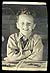

Click
over the image to go back to the thumbnails
Last updated:Tue, Mar 19, 2002
|
|
||
| I have also created a 'painted' version of this image. Check out the FLASH version | ||
| This image started as a black and white print and I probably did far too much to it in Photoshop! I used different layers for each area of the face and modified the colour for each area. Notice the missing tooth NOT a digital effect! |  | |
| Another school photo. | I think I was about 7 | |
|
Click
over the image to go back to the thumbnails
|
||
| Chris Jennings - Self Portrait |
Last updated:
|
|